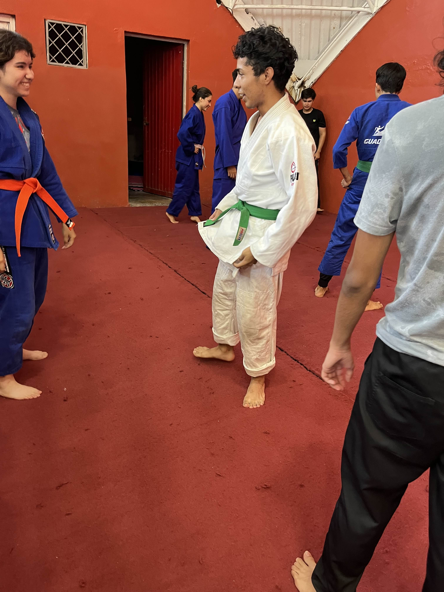
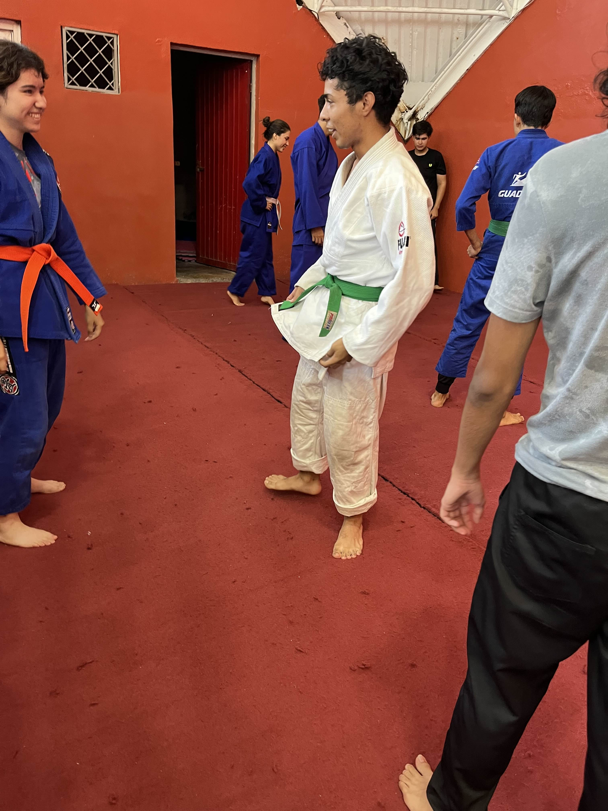
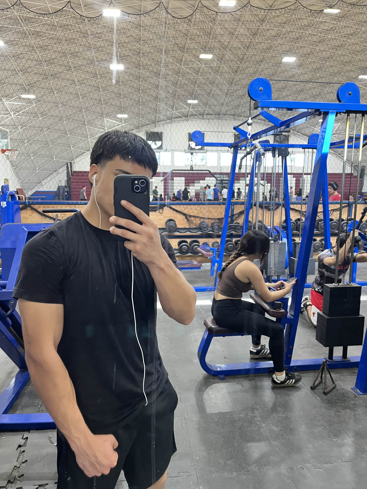
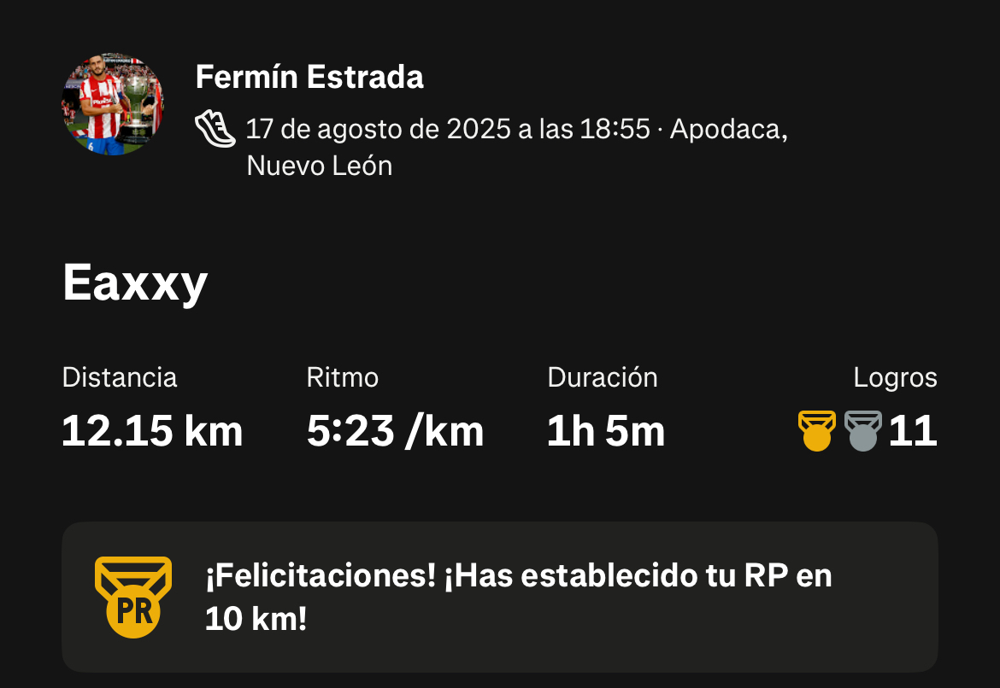
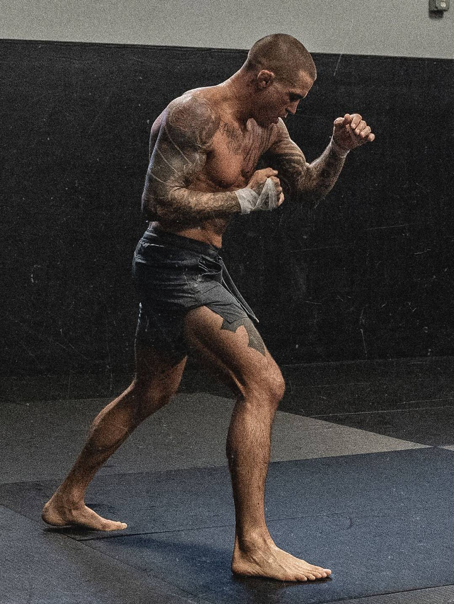

1. Judo
Formo parte del equipo de judo de FACPYA desde 4to semestre, lo elegí porque me gustan los deportes de combate y sentía un área de oportunidad en mi grappling.
Formo parte del equipo de judo de FACPYA desde 4to semestre, lo elegí porque me gustan los deportes de combate y sentía un área de oportunidad en mi grappling.
Mi abuelo y mi padre siempre me inculcaron el ejercicio, por lo que entreno desde hace algunos años.
Para complementar mi rutina de entrenamiento, me gusta correr. Es el primer deporte que practiqué; desde los 4 años.
Acostumbro ver la UFC los sábados en la noche con mi padre. Incluso últimamente me gusta apostar.
